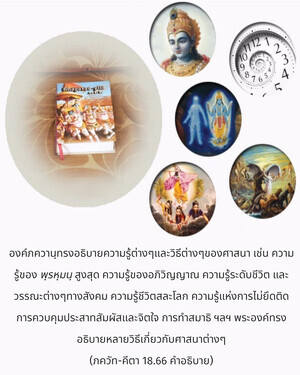
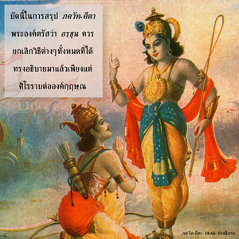

ยกเลิกศาสนาทั้งหมด และเพียงแต่ศิโรราบต่อข้า ข้าจะส่งเธอให้ออกจากผลบาปทั้งปวง จงอย่ากลัว


องค์ภควานฺทรงอธิบายความรู้ต่างๆและวิธีต่างๆของศาสนา เช่น ความรู้ของ พฺรหฺมนฺ สูงสุด ความรู้ของอภิวิญญาณ ความรู้ระดับชีวิต และวรรณะต่างๆทางสังคม ความรู้ชีวิตสละโลก ความรู้แห่งการไม่ยึดติด การควบคุมประสาทสัมผัสและจิตใจ การทำสมาธิ ฯลฯ พระองค์ทรงอธิบายหลายวิธีเกี่ยวกับศาสนาต่างๆ บัดนี้ในการสรุป ภควัท-คีตา พระองค์ตรัสว่า อรฺชุน ควรยกเลิกวิธีต่างๆทั้งหมดที่ได้ทรงอธิบายมาแล้วเพียงแต่ศิโรราบต่อองค์กฺฤษฺณ การศิโรราบนี้จะช่วยให้ออกจากผลบาปทั้งปวง เพราะว่าองค์ภควานฺทรงให้สัญญาด้วยพระองค์เองว่าจะปกป้อง อรฺชุน
ในบทที่เจ็ดได้มีการกล่าวไว้ว่า บุคคลผู้เป็นอิสระจากผลบาปทั้งหมดเท่านั้นจึงสามารถปฏิบัติบูชาองค์ศฺรี กฺฤษฺณได้ ดังนั้นเราอาจคิดว่านอกเสียจากจะเป็นอิสระจากผลบาปทั้งหมด มิฉะนั้นเราก็จะไม่สามารถปฏิบัติวิธีการศิโรราบ สำหรับข้อสงสัยนี้ได้กล่าวไว้ตรงนี้ว่า แม้หากเราไม่เป็นอิสระจากผลบาปทั้งหมด เพียงด้วยวิธีการศิโรราบต่อศฺรี กฺฤษฺณเราก็จะเป็นอิสระโดยปริยาย ไม่มีความจำเป็นต้องพยายามเป็นพิเศษเพื่อให้ตนเองเป็นอิสระจากผลบาป เราควรยอมรับองค์กฺฤษฺณโดยไม่มีข้อสงสัยว่าพระองค์ทรงเป็นผู้ช่วยเหลือสูงสุดของมวลชีวิต ด้วยความศรัทธาและความรักเราจึงควรศิโรราบต่อพระองค์
วิธีแห่งการศิโรราบต่อองค์กฺฤษฺณได้อธิบายไว้ใน หริ-ภกฺติ-วิลาส (11.676)
อานุกูลฺยสฺย สงฺกลฺปห์
ปฺราติกูลฺยสฺย วรฺชนมฺ
รกฺษิษฺยตีติ วิศฺวาโส
โคปฺตฺฤเตฺว วรณํ ตถา
อาตฺม-นิกฺเษป-การฺปเณฺย
ษฑฺ-วิธา ศรณาคติห์
ตามวิธีการอุทิศตนเสียสละเราเพียงแต่ยอมรับหลักธรรมทางศาสนา เช่นนี้จะนำมาสู่การอุทิศตนเสียสละรับใช้ต่อองค์ภควานฺในที่สุด เราอาจปฏิบัติอาชีพการงานโดยเฉพาะตามสถานภาพชีวิตในสังคม แต่ถ้าหากปฏิบัติตามหน้าที่แล้วมาไม่ถึงจุดแห่งกฺฤษฺณจิตสำนึกกิจกรรมของเราทั้งหมดจะไร้ประโยชน์ สิ่งใดที่ไม่นำมาให้ถึงระดับสมบูรณ์แห่งกฺฤษฺณจิตสำนึกควรหลีกเลี่ยง เราควรมั่นใจว่าในทุกๆสถานการณ์ว่าองค์กฺฤษฺณจะทรงปกป้องเราจากความยากลำบากทั้งปวง ไม่จำเป็นต้องคิดว่าควรดำรงรักษาร่างกายและดวงวิญญาณให้อยู่ด้วยกันอย่างไร องค์กฺฤษฺณจะทรงดูแลเอง เราควรคิดเสมอว่าตนเองช่วยตัวเองไม่ได้ และควรพิจารณาว่าองค์กฺฤษฺณทรงเป็นพื้นฐานแห่งความเจริญก้าวหน้าในชีวิตของเราเท่านั้น ทันทีที่ปฏิบัติอย่างจริงจังในการอุทิศตนเสียสละรับใช้ต่อองค์ภควานฺในกฺฤษฺณจิตสำนึกที่สมบูรณ์ เราจะเป็นอิสระจากมลทินทั้งปวงแห่งธรรมชาติวัตถุทันที มีวิธีทางศาสนาต่างๆและวิธีการที่ทำให้บริสุทธิ์ด้วยการพัฒนาความรู้ การทำสมาธิในระบบโยคะอิทธิฤทธิ์ แต่ผู้ที่ศิโรราบต่อองค์กฺฤษฺณไม่ต้องปฏิบัติตามวิธีการมากมาย การศิโรราบอย่างง่ายๆต่อองค์กฺฤษฺณจะช่วยให้เราไม่ต้องสูญเสียเวลาไปโดยไม่จำเป็น เราสามารถทำความเจริญก้าวหน้าทั้งหมดโดยทันที และเป็นอิสระจากผลบาปทั้งปวง
เราควรชื่นชอบกับรูปลักษณ์อันสง่างามขององค์กฺฤษฺณ พระนามของพระองค์คือองค์กฺฤษฺณก็เพราะว่าพระองค์ทรงมีเสน่ห์สูงสุด ผู้ที่ชื่นชอบกับภาพลักษณ์ขององค์กฺฤษฺณที่มีความสง่างาม มีพลังอำนาจทั้งหมด และมีพระเดชทั้งหมดเป็นผู้ที่โชคดี มีนักทิพย์นิยมต่างๆบ้างชื่นชอบกับ พฺรหฺมนฺ อันไร้รูปลักษณ์ บ้างก็ชื่นชอบกับลักษณะของอภิวิญญาณ ฯลฯ แต่ผู้ที่ชื่นชอบกับลักษณะส่วนพระองค์ของบุคลิกภาพสูงสุดแห่งพระเจ้า และเหนือสิ่งอื่นใดทั้งหมดผู้ที่ชื่นชอบกับองค์ภควานฺในรูปลักษณ์ขององค์กฺฤษฺเป็นนักทิพย์นิยมที่สมบูรณ์ที่สุด อีกนัยหนึ่งการอุทิศตนเสียสละต่อองค์กฺฤษฺณในจิตสำนึกที่สมบูรณ์เป็นส่วนลับที่สุดของความรู้ และนี่คือเนื้อหาสาระของ ภควัท-คีตา ทั้งหมด กรฺม-โยคี หรือนักปราชญ์ช่างสังเกต โยคีหรือผู้มีฤทธิ์ และสาวก ทั้งหมดเรียกว่านักทิพย์นิยม แต่ผู้เป็นสาวกที่บริสุทธิ์ดีที่สุด คำที่ใช้โดยเฉพาะ ณ ที่นี้คือ มา ศุจห์ “จงอย่ากลัว จงอย่าลังเล จงอย่าวิตก” มีความสำคัญมาก เราอาจสับสนว่าจะสามารถยกเลิกรูปแบบของศาสนาต่างๆทั้งหมดและเพียงแต่ศิโรราบต่อองค์กฺฤษฺณได้อย่างไร แต่ความวิตกกังวลเช่นนี้ไร้ประโยชน์